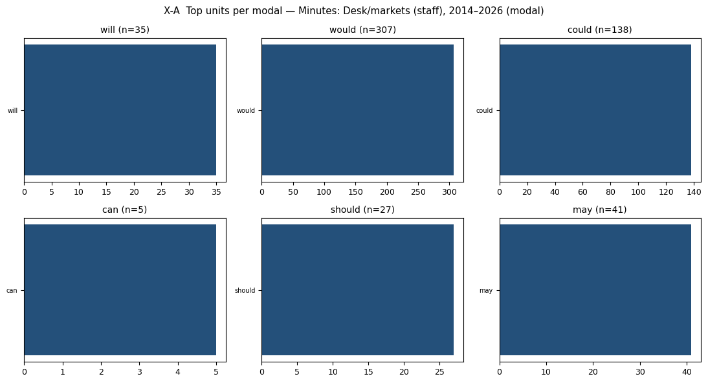
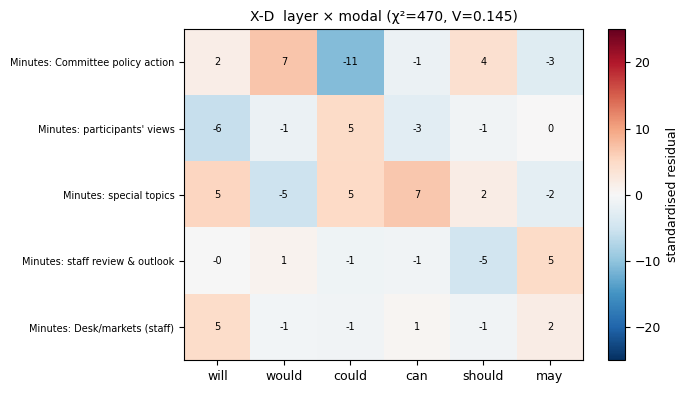
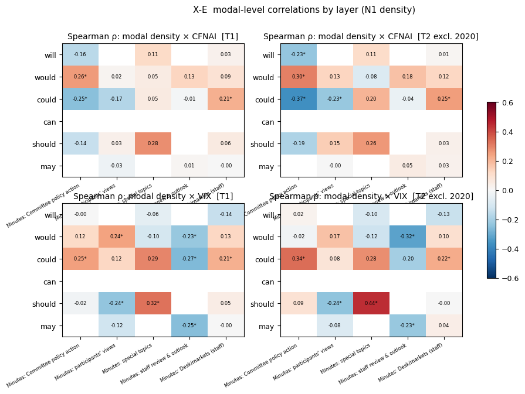
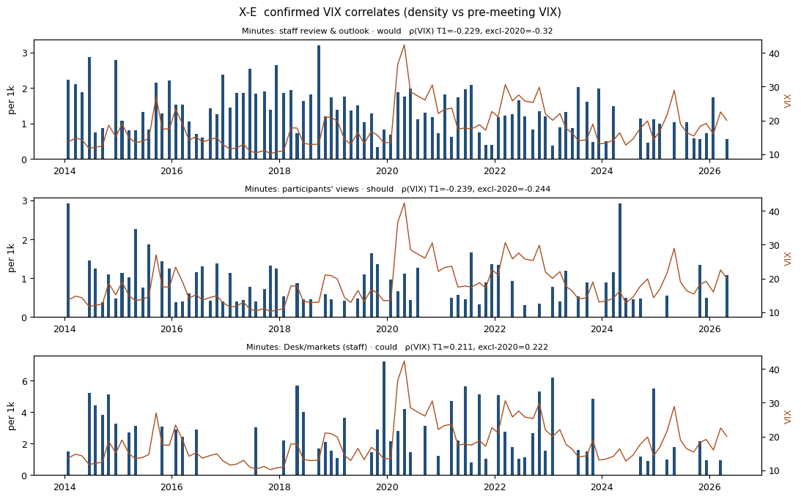
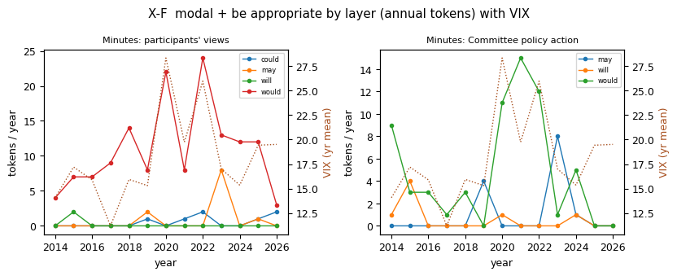

진단용: 의사록만으로 무엇이 보이는가.
진단용: 의사록만으로 무엇이 보이는가.
| 층위 | 문서 | 토큰 | 6대 조동사 | per 1k |
|---|---|---|---|---|
| Minutes: Desk/markets (staff) | 99 | 71,942 | 553 | 7.69 |
| Minutes: staff review & outlook | 99 | 249,885 | 539 | 2.16 |
| Minutes: participants' views | 99 | 223,992 | 2,756 | 12.3 |
| Minutes: Committee policy action | 99 | 62,833 | 958 | 15.25 |
| Minutes: special topics | 40 | 40,777 | 783 | 19.2 |
| 층위 | 단위 | 거시 | ρ T1 | ρ excl-2020 | ρ 2010– | ρ 2014–19 | ρ 2021–26 | 토큰 |
|---|---|---|---|---|---|---|---|---|
| min_committee | could | cfnai | -0.251 | -0.37 | -0.13 | -0.415 | -0.548 | 83 |
| min_committee | could | cfnai | -0.251 | -0.37 | -0.13 | -0.415 | -0.548 | 83 |
| min_staff | ALL | vix | -0.333 | -0.361 | -0.393 | -0.197 | -0.235 | 539 |
| min_staff | would | vix | -0.229 | -0.32 | -0.269 | -0.262 | -0.014 | 327 |
| min_staff | would | vix | -0.229 | -0.32 | -0.269 | -0.262 | -0.014 | 327 |
| min_committee | would | cfnai | 0.257 | 0.304 | 0.27 | 0.327 | 0.278 | 719 |
| min_committee | would | cfnai | 0.257 | 0.304 | 0.27 | 0.327 | 0.278 | 719 |
| min_staff_desk | could | cfnai | 0.213 | 0.252 | 0.182 | 0.241 | 0.269 | 138 |
| min_staff_desk | could | cfnai | 0.213 | 0.252 | 0.182 | 0.241 | 0.269 | 138 |
| min_participants | should | vix | -0.239 | -0.244 | -0.292 | -0.085 | -0.155 | 149 |
| min_participants | should | vix | -0.239 | -0.244 | -0.292 | -0.085 | -0.155 | 149 |
| min_staff_desk | could | vix | 0.211 | 0.222 | 0.147 | 0.125 | 0.405 | 138 |
| 층위 | 단위 | 토큰 | ρ VIX T1 | ρ VIX excl-2020 | ρ CFNAI T1 | 제로 비율 T1 |
|---|---|---|---|---|---|---|
| min_committee | may+be+appropriate | 13 | -0.092 (p=0.3658) | -0.058 (p=0.5824) | -0.222 | 0.89 |
| min_committee | will+be+appropriate | 7 | -0.102 (p=0.3139) | -0.155 (p=0.1425) | -0.012 | 0.93 |
| min_committee | would+be+appropriate | 63 | 0.373 (p=0.0001) | 0.334 (p=0.0012) | 0.407 | 0.55 |
| min_participants | may+be+appropriate | 11 | 0.022 (p=0.8306) | 0.055 (p=0.6052) | -0.154 | 0.94 |
| min_participants | would+be+appropriate | 143 | 0.21 (p=0.037) | 0.154 (p=0.1443) | -0.053 | 0.23 |
| min_special | would+be+appropriate | 23 | 0.217 (p=0.1787) | 0.325 (p=0.0531) | 0.289 | 0.6 |
| min_staff_desk | would+be+appropriate | 8 | 0.054 (p=0.5978) | 0.089 (p=0.4028) | -0.015 | 0.95 |





| period | layer | label | n_docs | tokens | six_modal_tokens | per_1k |
|---|---|---|---|---|---|---|
| T1 | min_staff_desk | Minutes: Desk/markets (staff) | 99 | 71942 | 553 | 7.69 |
| T1 | min_staff | Minutes: staff review & outlook | 99 | 249885 | 539 | 2.16 |
| T1 | min_participants | Minutes: participants' views | 99 | 223992 | 2756 | 12.30 |
| T1 | min_committee | Minutes: Committee policy action | 99 | 62833 | 958 | 15.25 |
| T1 | min_special | Minutes: special topics | 40 | 40777 | 783 | 19.20 |
| T2 | min_staff_desk | Minutes: Desk/markets (staff) | 91 | 65804 | 501 | 7.61 |
| T2 | min_staff | Minutes: staff review & outlook | 91 | 225146 | 498 | 2.21 |
| T2 | min_participants | Minutes: participants' views | 91 | 204165 | 2444 | 11.97 |
| T2 | min_committee | Minutes: Committee policy action | 91 | 58151 | 886 | 15.24 |
| T2 | min_special | Minutes: special topics | 36 | 35950 | 675 | 18.78 |
| T3 | min_staff_desk | Minutes: Desk/markets (staff) | 131 | 88213 | 774 | 8.77 |
| T3 | min_staff | Minutes: staff review & outlook | 131 | 334850 | 704 | 2.10 |
| T3 | min_participants | Minutes: participants' views | 131 | 282404 | 3359 | 11.89 |
| T3 | min_committee | Minutes: Committee policy action | 131 | 84104 | 1254 | 14.91 |
| T3 | min_special | Minutes: special topics | 49 | 45089 | 863 | 19.14 |
| layer | will_n | would_n | could_n | can_n | should_n | may_n | will_per1k | would_per1k | could_per1k | can_per1k | should_per1k | may_per1k | tokens |
|---|---|---|---|---|---|---|---|---|---|---|---|---|---|
| min_committee | 37 | 719 | 83 | 3 | 85 | 31 | 0.59 | 11.44 | 1.32 | 0.05 | 1.35 | 0.49 | 62833 |
| min_participants | 30 | 1537 | 875 | 8 | 149 | 157 | 0.13 | 6.86 | 3.91 | 0.04 | 0.67 | 0.70 | 223992 |
| min_special | 49 | 344 | 283 | 21 | 58 | 28 | 1.20 | 8.44 | 6.94 | 0.51 | 1.42 | 0.69 | 40777 |
| min_staff | 16 | 327 | 132 | 2 | 5 | 57 | 0.06 | 1.31 | 0.53 | 0.01 | 0.02 | 0.23 | 249885 |
| min_staff_desk | 35 | 307 | 138 | 5 | 27 | 41 | 0.49 | 4.27 | 1.92 | 0.07 | 0.38 | 0.57 | 71942 |
| layer | modal | n | neg | question | cond | reported | contracted | subj_we_I | subj_person | subj_committee_fed | subj_econ | passive | perfect |
|---|---|---|---|---|---|---|---|---|---|---|---|---|---|
| min_committee | could | 83 | 0.000 | 0.0 | 0.614 | 0.277 | 0.0 | 0.0 | 0.000 | 0.036 | 0.120 | 0.060 | 0.000 |
| min_committee | will | 37 | 0.000 | 0.0 | 0.216 | 0.622 | 0.0 | 0.0 | 0.108 | 0.162 | 0.297 | 0.000 | 0.000 |
| min_committee | would | 719 | 0.000 | 0.0 | 0.164 | 0.786 | 0.0 | 0.0 | 0.243 | 0.103 | 0.275 | 0.017 | 0.001 |
| min_participants | could | 875 | 0.005 | 0.0 | 0.287 | 0.506 | 0.0 | 0.0 | 0.029 | 0.027 | 0.304 | 0.098 | 0.016 |
| min_participants | will | 30 | 0.000 | 0.0 | 0.267 | 0.767 | 0.0 | 0.0 | 0.100 | 0.000 | 0.467 | 0.167 | 0.000 |
| min_participants | would | 1537 | 0.016 | 0.0 | 0.184 | 0.714 | 0.0 | 0.0 | 0.040 | 0.020 | 0.399 | 0.116 | 0.005 |
| min_special | can | 21 | 0.048 | 0.0 | 0.429 | 0.571 | 0.0 | 0.0 | 0.000 | 0.000 | 0.381 | 0.333 | 0.000 |
| min_special | could | 283 | 0.004 | 0.0 | 0.300 | 0.431 | 0.0 | 0.0 | 0.011 | 0.085 | 0.279 | 0.201 | 0.004 |
| min_special | will | 49 | 0.000 | 0.0 | 0.082 | 0.347 | 0.0 | 0.0 | 0.020 | 0.224 | 0.143 | 0.102 | 0.000 |
| min_special | would | 344 | 0.052 | 0.0 | 0.241 | 0.576 | 0.0 | 0.0 | 0.067 | 0.067 | 0.186 | 0.145 | 0.006 |
| min_staff | could | 132 | 0.000 | 0.0 | 0.326 | 0.250 | 0.0 | 0.0 | 0.000 | 0.000 | 0.530 | 0.038 | 0.008 |
| min_staff | would | 327 | 0.006 | 0.0 | 0.104 | 0.327 | 0.0 | 0.0 | 0.003 | 0.021 | 0.520 | 0.058 | 0.009 |
| min_staff_desk | could | 138 | 0.000 | 0.0 | 0.246 | 0.464 | 0.0 | 0.0 | 0.029 | 0.058 | 0.283 | 0.188 | 0.014 |
| min_staff_desk | will | 35 | 0.029 | 0.0 | 0.257 | 0.457 | 0.0 | 0.0 | 0.057 | 0.143 | 0.143 | 0.086 | 0.029 |
| min_staff_desk | would | 307 | 0.020 | 0.0 | 0.215 | 0.459 | 0.0 | 0.0 | 0.072 | 0.101 | 0.179 | 0.143 | 0.016 |
| level | key | period | macro | n | r | p_r | rho | p_rho | q_rho |
|---|---|---|---|---|---|---|---|---|---|
| genre | minutes | T1 | cfnai | 99 | -0.039 | 0.702 | 0.079 | 0.438 | 0.613 |
| genre | minutes | T1 | vix | 99 | 0.101 | 0.319 | 0.066 | 0.513 | 0.513 |
| genre | minutes | T2 | cfnai | 91 | 0.124 | 0.242 | 0.153 | 0.147 | 0.500 |
| genre | minutes | T2 | vix | 91 | -0.032 | 0.762 | -0.008 | 0.941 | 0.941 |
| genre | minutes | T3 | cfnai | 131 | -0.028 | 0.751 | 0.085 | 0.334 | 0.729 |
| genre | minutes | T3 | vix | 131 | -0.019 | 0.827 | -0.065 | 0.462 | 0.538 |
| genre | minutes | H1 | cfnai | 48 | 0.183 | 0.213 | 0.218 | 0.137 | 0.446 |
| genre | minutes | H1 | vix | 48 | 0.171 | 0.245 | 0.215 | 0.142 | 0.495 |
| genre | minutes | H2 | cfnai | 43 | 0.107 | 0.493 | 0.046 | 0.768 | 0.768 |
| genre | minutes | H2 | vix | 43 | -0.038 | 0.807 | -0.022 | 0.888 | 0.888 |
| layer | min_committee | T1 | cfnai | 99 | -0.047 | 0.642 | 0.009 | 0.926 | 0.965 |
| layer | min_committee | T1 | vix | 99 | 0.102 | 0.318 | 0.122 | 0.230 | 0.346 |
| layer | min_committee | T2 | cfnai | 91 | -0.012 | 0.909 | -0.019 | 0.856 | 0.972 |
| layer | min_committee | T2 | vix | 91 | 0.070 | 0.510 | 0.098 | 0.354 | 0.629 |
| layer | min_committee | T3 | cfnai | 131 | -0.018 | 0.839 | 0.101 | 0.249 | 0.566 |
| layer | min_committee | T3 | vix | 131 | 0.082 | 0.354 | 0.097 | 0.270 | 0.411 |
| layer | min_committee | H1 | cfnai | 48 | 0.120 | 0.416 | 0.179 | 0.222 | 0.371 |
| layer | min_committee | H1 | vix | 48 | -0.124 | 0.401 | -0.114 | 0.441 | 0.854 |
| layer | min_committee | H2 | cfnai | 43 | -0.200 | 0.197 | -0.223 | 0.151 | 0.503 |
| layer | min_committee | H2 | vix | 43 | -0.223 | 0.151 | -0.180 | 0.248 | 0.451 |
| layer | min_participants | T1 | cfnai | 99 | -0.132 | 0.193 | -0.090 | 0.373 | 0.798 |
| layer | min_participants | T1 | vix | 99 | 0.263 | 0.009 | 0.144 | 0.156 | 0.327 |
| layer | min_participants | T2 | cfnai | 91 | 0.034 | 0.750 | -0.005 | 0.960 | 0.979 |
| layer | min_participants | T2 | vix | 91 | 0.050 | 0.641 | 0.064 | 0.549 | 0.685 |
| layer | min_participants | T3 | cfnai | 131 | -0.115 | 0.190 | -0.069 | 0.433 | 0.773 |
| layer | min_participants | T3 | vix | 131 | 0.083 | 0.344 | 0.025 | 0.777 | 0.895 |
| layer | min_participants | H1 | cfnai | 48 | 0.064 | 0.665 | 0.098 | 0.507 | 0.534 |
| layer | min_participants | H1 | vix | 48 | -0.027 | 0.855 | -0.009 | 0.954 | 0.954 |
| layer | min_participants | H2 | cfnai | 43 | 0.001 | 0.996 | -0.074 | 0.639 | 0.752 |
| layer | min_participants | H2 | vix | 43 | -0.059 | 0.708 | -0.045 | 0.773 | 0.859 |
| layer | min_special | T1 | cfnai | 40 | 0.097 | 0.551 | 0.196 | 0.225 | 0.562 |
| layer | min_special | T1 | vix | 40 | -0.095 | 0.561 | -0.161 | 0.320 | 0.422 |
| layer | min_special | T2 | cfnai | 36 | 0.127 | 0.460 | 0.210 | 0.218 | 0.435 |
| layer | min_special | T2 | vix | 36 | -0.088 | 0.611 | -0.139 | 0.419 | 0.629 |
| layer | min_special | T3 | cfnai | 49 | 0.086 | 0.556 | 0.273 | 0.058 | 0.288 |
| layer | min_special | T3 | vix | 49 | 0.054 | 0.711 | -0.033 | 0.824 | 0.895 |
| layer | min_staff | T1 | cfnai | 99 | -0.010 | 0.920 | 0.075 | 0.459 | 0.866 |
| layer | min_staff | T1 | vix | 99 | -0.249 | 0.013 | -0.333 | 0.001 | 0.019 |
| layer | min_staff | T2 | cfnai | 91 | 0.051 | 0.629 | 0.092 | 0.386 | 0.644 |
| layer | min_staff | T2 | vix | 91 | -0.300 | 0.004 | -0.361 | 0.000 | 0.011 |
| layer | min_staff | T3 | cfnai | 131 | -0.007 | 0.933 | 0.058 | 0.508 | 0.794 |
| layer | min_staff | T3 | vix | 131 | -0.301 | 0.000 | -0.393 | 0.000 | 0.000 |
| layer | min_staff | H1 | cfnai | 48 | 0.245 | 0.093 | 0.280 | 0.054 | 0.255 |
| layer | min_staff | H1 | vix | 48 | -0.085 | 0.566 | -0.197 | 0.180 | 0.696 |
| layer | min_staff | H2 | cfnai | 43 | -0.054 | 0.733 | -0.097 | 0.538 | 0.731 |
| layer | min_staff | H2 | vix | 43 | -0.160 | 0.305 | -0.235 | 0.129 | 0.285 |
| layer | min_staff_desk | T1 | cfnai | 99 | 0.082 | 0.419 | 0.139 | 0.170 | 0.561 |
| layer | min_staff_desk | T1 | vix | 99 | 0.085 | 0.402 | 0.139 | 0.170 | 0.327 |
| layer | min_staff_desk | T2 | cfnai | 91 | 0.199 | 0.058 | 0.162 | 0.126 | 0.352 |
| layer | min_staff_desk | T2 | vix | 91 | 0.063 | 0.555 | 0.120 | 0.259 | 0.540 |
| layer | min_staff_desk | T3 | cfnai | 131 | 0.066 | 0.451 | 0.135 | 0.124 | 0.384 |
| layer | min_staff_desk | T3 | vix | 131 | 0.112 | 0.202 | 0.113 | 0.200 | 0.357 |
| layer | min_staff_desk | H1 | cfnai | 48 | 0.204 | 0.166 | 0.140 | 0.341 | 0.468 |
| layer | min_staff_desk | H1 | vix | 48 | -0.018 | 0.906 | 0.044 | 0.769 | 0.854 |
| layer | min_staff_desk | H2 | cfnai | 43 | 0.235 | 0.130 | 0.200 | 0.199 | 0.567 |
| layer | min_staff_desk | H2 | vix | 43 | 0.186 | 0.232 | 0.236 | 0.128 | 0.285 |
| level | key | unit | macro | rho_T1 | p_T1 | rho_T2 | p_T2 | rho_T3 | rho_H1 | rho_H2 | n_tokens_T1 | zero_share_T1 | T1_only | era_composition | confirmed | unit_level |
|---|---|---|---|---|---|---|---|---|---|---|---|---|---|---|---|---|
| layer | min_committee | could | cfnai | -0.251 | 0.0122 | -0.370 | 0.0003 | -0.130 | -0.415 | -0.548 | 83 | 0.293 | False | False | True | modal |
| layer | min_committee | could | cfnai | -0.251 | 0.0122 | -0.370 | 0.0003 | -0.130 | -0.415 | -0.548 | 83 | 0.293 | False | False | True | U1 |
| layer | min_staff | ALL | vix | -0.333 | 0.0008 | -0.361 | 0.0004 | -0.393 | -0.197 | -0.235 | 539 | 0.000 | False | False | True | modal |
| layer | min_staff | would | vix | -0.229 | 0.0228 | -0.320 | 0.0020 | -0.269 | -0.262 | -0.014 | 327 | 0.071 | False | False | True | modal |
| layer | min_staff | would | vix | -0.229 | 0.0228 | -0.320 | 0.0020 | -0.269 | -0.262 | -0.014 | 327 | 0.071 | False | False | True | U1 |
| layer | min_committee | would | cfnai | 0.257 | 0.0103 | 0.304 | 0.0034 | 0.270 | 0.327 | 0.278 | 719 | 0.000 | False | False | True | modal |
| layer | min_committee | would | cfnai | 0.257 | 0.0103 | 0.304 | 0.0034 | 0.270 | 0.327 | 0.278 | 719 | 0.000 | False | False | True | U1 |
| genre | minutes | would | cfnai | 0.209 | 0.0377 | 0.292 | 0.0049 | 0.175 | 0.255 | 0.210 | 3234 | 0.000 | False | False | True | modal |
| genre | minutes | would | cfnai | 0.209 | 0.0377 | 0.292 | 0.0049 | 0.175 | 0.255 | 0.210 | 3234 | 0.000 | False | False | True | U1 |
| layer | min_staff_desk | could | cfnai | 0.213 | 0.0344 | 0.252 | 0.0161 | 0.182 | 0.241 | 0.269 | 138 | 0.434 | False | False | True | modal |
| layer | min_staff_desk | could | cfnai | 0.213 | 0.0344 | 0.252 | 0.0161 | 0.182 | 0.241 | 0.269 | 138 | 0.434 | False | False | True | U1 |
| layer | min_participants | should | vix | -0.239 | 0.0174 | -0.244 | 0.0199 | -0.292 | -0.085 | -0.155 | 149 | 0.283 | False | False | True | modal |
| layer | min_participants | should | vix | -0.239 | 0.0174 | -0.244 | 0.0199 | -0.292 | -0.085 | -0.155 | 149 | 0.283 | False | False | True | U1 |
| layer | min_staff_desk | could | vix | 0.211 | 0.0358 | 0.222 | 0.0347 | 0.147 | 0.125 | 0.405 | 138 | 0.434 | False | False | True | modal |
| layer | min_staff_desk | could | vix | 0.211 | 0.0358 | 0.222 | 0.0347 | 0.147 | 0.125 | 0.405 | 138 | 0.434 | False | False | True | U1 |
| layer | min_special | should | vix | 0.325 | 0.0409 | 0.443 | 0.0068 | 0.337 | 58 | 0.325 | True | True | False | modal | ||
| layer | min_special | should | vix | 0.325 | 0.0409 | 0.443 | 0.0068 | 0.337 | 58 | 0.325 | True | True | False | U1 | ||
| layer | min_committee | could | vix | 0.245 | 0.0144 | 0.337 | 0.0011 | 0.255 | 0.190 | -0.120 | 83 | 0.293 | True | True | False | modal |
| layer | min_committee | could | vix | 0.245 | 0.0144 | 0.337 | 0.0011 | 0.255 | 0.190 | -0.120 | 83 | 0.293 | True | True | False | U1 |
| layer | min_staff | may | vix | -0.255 | 0.0109 | -0.227 | 0.0302 | -0.267 | 0.107 | -0.285 | 57 | 0.535 | True | True | False | modal |
| layer | min_staff | may | vix | -0.255 | 0.0109 | -0.227 | 0.0302 | -0.267 | 0.107 | -0.285 | 57 | 0.535 | True | True | False | U1 |
| genre | minutes | could | vix | 0.219 | 0.0293 | 0.225 | 0.0317 | 0.092 | 0.341 | -0.043 | 1511 | 0.000 | True | True | False | modal |
| genre | minutes | could | vix | 0.219 | 0.0293 | 0.225 | 0.0317 | 0.092 | 0.341 | -0.043 | 1511 | 0.000 | True | True | False | U1 |
| layer | min_staff | could | vix | -0.266 | 0.0078 | -0.204 | 0.0525 | -0.305 | -0.108 | -0.337 | 132 | 0.364 | True | False | False | modal |
| layer | min_staff | could | vix | -0.266 | 0.0078 | -0.204 | 0.0525 | -0.305 | -0.108 | -0.337 | 132 | 0.364 | True | False | False | U1 |
| genre | minutes | may | vix | -0.232 | 0.0208 | -0.176 | 0.0951 | -0.329 | 0.158 | -0.558 | 314 | 0.101 | True | False | False | modal |
| genre | minutes | may | vix | -0.232 | 0.0208 | -0.176 | 0.0951 | -0.329 | 0.158 | -0.558 | 314 | 0.101 | True | False | False | U1 |
| layer | min_participants | would | vix | 0.240 | 0.0166 | 0.175 | 0.0978 | 0.145 | -0.044 | 0.282 | 1537 | 0.000 | True | False | False | modal |
| layer | min_participants | would | vix | 0.240 | 0.0166 | 0.175 | 0.0978 | 0.145 | -0.044 | 0.282 | 1537 | 0.000 | True | False | False | U1 |
| layer | unit | n_tokens | rho_cfnai_T1 | rho_cfnai_T2 | rho_cfnai_T3 | rho_vix_T1 | p_vix_T1 | rho_vix_T2 | p_vix_T2 | rho_vix_T3 | hac_b_vix_T1 | hac_p_vix_T1 | hac_b_vix_T2 | hac_p_vix_T2 | hac_b_cfnai_T2 | hac_p_cfnai_T2 | zero_T1 |
|---|---|---|---|---|---|---|---|---|---|---|---|---|---|---|---|---|---|
| min_committee | ALL | 958 | 0.009 | -0.019 | 0.101 | 0.122 | 0.230 | 0.098 | 0.354 | 0.097 | 0.050 | 0.265 | 0.048 | 0.453 | -0.333 | 0.820 | 0.00 |
| min_committee | would | 719 | 0.257 | 0.304 | 0.270 | 0.116 | 0.255 | -0.019 | 0.855 | 0.095 | 0.093 | 0.201 | -0.030 | 0.738 | 3.680 | 0.004 | 0.00 |
| min_committee | should | 85 | -0.136 | -0.187 | -0.075 | -0.022 | 0.831 | 0.087 | 0.414 | -0.079 | -0.031 | 0.171 | 0.004 | 0.930 | -0.702 | 0.391 | 0.45 |
| min_committee | could | 83 | -0.251 | -0.370 | -0.130 | 0.245 | 0.014 | 0.337 | 0.001 | 0.255 | 0.026 | 0.352 | 0.086 | 0.000 | -1.587 | 0.001 | 0.29 |
| min_committee | will | 37 | -0.159 | -0.232 | -0.154 | -0.003 | 0.973 | 0.020 | 0.849 | -0.011 | -0.013 | 0.479 | 0.006 | 0.794 | -1.328 | 0.072 | 0.78 |
| min_participants | ALL | 2756 | -0.091 | -0.005 | -0.069 | 0.144 | 0.156 | 0.064 | 0.549 | 0.025 | 0.118 | 0.066 | 0.024 | 0.660 | 0.272 | 0.799 | 0.00 |
| min_participants | would | 1537 | 0.017 | 0.131 | 0.012 | 0.240 | 0.017 | 0.175 | 0.098 | 0.145 | 0.100 | 0.018 | 0.043 | 0.500 | 0.782 | 0.240 | 0.00 |
| min_participants | could | 875 | -0.175 | -0.227 | -0.174 | 0.124 | 0.220 | 0.075 | 0.478 | 0.059 | 0.050 | 0.190 | 0.043 | 0.490 | -1.051 | 0.203 | 0.00 |
| min_participants | may | 157 | -0.031 | -0.003 | 0.027 | -0.120 | 0.236 | -0.083 | 0.435 | -0.207 | -0.005 | 0.807 | -0.019 | 0.279 | -0.049 | 0.875 | 0.32 |
| min_participants | should | 149 | 0.029 | 0.147 | 0.023 | -0.239 | 0.017 | -0.244 | 0.020 | -0.292 | -0.023 | 0.041 | -0.040 | 0.000 | 0.469 | 0.093 | 0.28 |
| min_special | ALL | 783 | 0.196 | 0.210 | 0.273 | -0.161 | 0.320 | -0.139 | 0.419 | -0.033 | -0.085 | 0.722 | -0.174 | 0.611 | 3.994 | 0.275 | 0.00 |
| min_special | would | 344 | 0.049 | -0.081 | 0.011 | -0.104 | 0.522 | -0.124 | 0.473 | -0.025 | -0.102 | 0.515 | -0.166 | 0.355 | -0.224 | 0.935 | 0.00 |
| min_special | could | 283 | 0.053 | 0.204 | 0.138 | 0.293 | 0.066 | 0.278 | 0.101 | 0.315 | 0.182 | 0.167 | 0.210 | 0.264 | 1.087 | 0.574 | 0.20 |
| min_special | should | 58 | 0.280 | 0.259 | 0.318 | 0.325 | 0.041 | 0.443 | 0.007 | 0.337 | 0.069 | 0.243 | 0.089 | 0.229 | 0.642 | 0.417 | 0.33 |
| min_special | will | 49 | 0.114 | 0.108 | 0.104 | -0.061 | 0.710 | -0.097 | 0.575 | -0.034 | -0.208 | 0.094 | -0.294 | 0.098 | 2.601 | 0.369 | 0.62 |
| min_staff | ALL | 539 | 0.075 | 0.092 | 0.058 | -0.333 | 0.001 | -0.361 | 0.000 | -0.393 | -0.044 | 0.031 | -0.072 | 0.006 | 0.500 | 0.309 | 0.00 |
| min_staff | would | 327 | 0.128 | 0.177 | 0.104 | -0.229 | 0.023 | -0.320 | 0.002 | -0.269 | -0.013 | 0.436 | -0.044 | 0.011 | 0.742 | 0.002 | 0.07 |
| min_staff | could | 132 | -0.014 | -0.041 | -0.002 | -0.266 | 0.008 | -0.204 | 0.052 | -0.305 | -0.021 | 0.010 | -0.018 | 0.141 | -0.216 | 0.442 | 0.36 |
| min_staff | may | 57 | 0.013 | 0.049 | -0.007 | -0.255 | 0.011 | -0.227 | 0.030 | -0.267 | -0.012 | 0.002 | -0.014 | 0.022 | 0.042 | 0.755 | 0.54 |
| min_staff_desk | ALL | 553 | 0.139 | 0.161 | 0.135 | 0.139 | 0.170 | 0.119 | 0.259 | 0.113 | 0.081 | 0.387 | 0.029 | 0.858 | 4.348 | 0.144 | 0.15 |
| min_staff_desk | would | 307 | 0.089 | 0.123 | 0.132 | 0.126 | 0.213 | 0.097 | 0.359 | 0.134 | 0.044 | 0.455 | 0.036 | 0.721 | 1.834 | 0.243 | 0.18 |
| min_staff_desk | could | 138 | 0.213 | 0.252 | 0.182 | 0.211 | 0.036 | 0.222 | 0.035 | 0.147 | 0.057 | 0.039 | 0.048 | 0.268 | 1.655 | 0.074 | 0.43 |
| min_staff_desk | may | 41 | -0.003 | 0.028 | -0.003 | -0.003 | 0.980 | 0.041 | 0.700 | -0.069 | -0.011 | 0.328 | -0.004 | 0.828 | 0.210 | 0.685 | 0.72 |
| min_staff_desk | will | 35 | 0.026 | 0.012 | 0.006 | -0.140 | 0.166 | -0.131 | 0.215 | -0.132 | -0.016 | 0.348 | -0.030 | 0.112 | -0.009 | 0.974 | 0.77 |
| min_staff_desk | should | 27 | 0.055 | 0.032 | 0.040 | 0.046 | 0.654 | -0.003 | 0.977 | 0.104 | -0.001 | 0.962 | -0.020 | 0.468 | 0.450 | 0.414 | 0.84 |
| layer | unit | n_tokens | rho_cfnai_T1 | p_cfnai_T1 | rho_vix_T1 | p_vix_T1 | zero_T1 | rho_cfnai_T2 | p_cfnai_T2 | rho_vix_T2 | p_vix_T2 | zero_T2 |
|---|---|---|---|---|---|---|---|---|---|---|---|---|
| min_committee | may+be+appropriate | 13 | -0.222 | 0.027 | -0.092 | 0.366 | 0.89 | -0.253 | 0.016 | -0.058 | 0.582 | 0.88 |
| min_committee | will+be+appropriate | 7 | -0.012 | 0.903 | -0.102 | 0.314 | 0.93 | -0.099 | 0.350 | -0.155 | 0.142 | 0.93 |
| min_committee | would+be+appropriate | 63 | 0.407 | 0.000 | 0.373 | 0.000 | 0.55 | 0.391 | 0.000 | 0.334 | 0.001 | 0.56 |
| min_participants | may+be+appropriate | 11 | -0.154 | 0.128 | 0.022 | 0.831 | 0.94 | -0.176 | 0.095 | 0.055 | 0.605 | 0.93 |
| min_participants | would+be+appropriate | 143 | -0.053 | 0.604 | 0.210 | 0.037 | 0.23 | 0.006 | 0.958 | 0.154 | 0.144 | 0.25 |
| min_special | would+be+appropriate | 23 | 0.289 | 0.071 | 0.217 | 0.179 | 0.60 | 0.266 | 0.117 | 0.325 | 0.053 | 0.56 |
| min_staff_desk | would+be+appropriate | 8 | -0.015 | 0.881 | 0.054 | 0.598 | 0.95 | -0.018 | 0.862 | 0.089 | 0.403 | 0.95 |
| key | unit | period | macro | p_text_to_macro | p_macro_to_text | n | q_text_to_macro | q_macro_to_text |
|---|---|---|---|---|---|---|---|---|
| minutes | ALL | T1 | cfnai | 0.245 | 0.807 | 99 | 0.997 | 0.991 |
| minutes | would | T1 | vix | 0.867 | 0.477 | 198 | 0.997 | 0.991 |
| minutes | would | T1 | cfnai | 0.760 | 0.842 | 198 | 0.997 | 0.991 |
| minutes | will | T2 | vix | 0.218 | 0.841 | 182 | 0.997 | 0.991 |
| minutes | will | T2 | cfnai | 0.986 | 0.915 | 182 | 0.997 | 0.991 |
| minutes | will | T1 | vix | 0.631 | 0.619 | 198 | 0.997 | 0.991 |
| minutes | will | T1 | cfnai | 0.946 | 0.949 | 198 | 0.997 | 0.991 |
| minutes | should | T2 | vix | 0.708 | 0.663 | 182 | 0.997 | 0.991 |
| minutes | should | T2 | cfnai | 0.951 | 0.233 | 182 | 0.997 | 0.991 |
| minutes | should | T1 | vix | 0.886 | 0.538 | 198 | 0.997 | 0.991 |
| minutes | should | T1 | cfnai | 0.997 | 0.950 | 198 | 0.997 | 0.991 |
| minutes | may | T2 | vix | 0.946 | 0.710 | 182 | 0.997 | 0.991 |
| minutes | may | T2 | cfnai | 0.651 | 0.796 | 182 | 0.997 | 0.991 |
| minutes | may | T1 | vix | 0.954 | 0.924 | 198 | 0.997 | 0.991 |
| minutes | may | T1 | cfnai | 0.953 | 0.873 | 198 | 0.997 | 0.991 |
| minutes | could | T2 | vix | 0.716 | 0.951 | 182 | 0.997 | 0.991 |
| minutes | could | T2 | cfnai | 0.943 | 0.930 | 182 | 0.997 | 0.991 |
| minutes | could | T1 | vix | 0.088 | 0.532 | 198 | 0.997 | 0.991 |
| minutes | could | T1 | cfnai | 0.987 | 0.991 | 198 | 0.997 | 0.991 |
| minutes | ALL | T2 | vix | 0.296 | 0.652 | 91 | 0.997 | 0.991 |
| minutes | ALL | T2 | cfnai | 0.655 | 0.063 | 91 | 0.997 | 0.991 |
| minutes | ALL | T1 | vix | 0.222 | 0.528 | 99 | 0.997 | 0.991 |
| minutes | would | T2 | cfnai | 0.485 | 0.378 | 182 | 0.997 | 0.991 |
| minutes | would | T2 | vix | 0.996 | 0.708 | 182 | 0.997 | 0.991 |